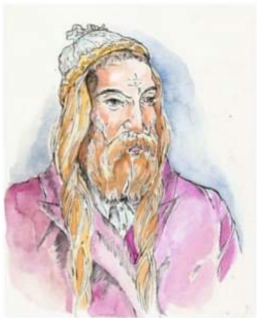

על התיקון הכללי ורבי נחמן מאומן

התיקון הכללי הוא סדר תפילות ותהילים שקבע רבי נחמן מברסלב, מגדולי הצדיקים והמקובלים בדורות האחרונים. רבי נחמן לימד שכל מי שיאמר את עשרת המזמורים הללו כסגולה לתיקון נפשו, יזכה לראות ישועות גדולות, מחילת עוונות ורפואה שלמה.
רבי נחמן נולד בעיירה מז'יבוז' שבאוקראינה, ונפטר באומן. הוא הקים את תנועת החסידות ברסלב, שהדגישה את השמחה, האמונה הפשוטה, וההתבודדות. ציונו באומן הפך למוקד עלייה לרגל לרבבות יהודים מדי שנה.
התיקון הכללי כולל עשרה פרקים מתהילים (טז, לב, מא, מב, נט, עז, צ, קה, קלז, קנ) אשר נבחרו בקפידה על ידי רבי נחמן בעצמו, כסגולה לתיקון פגם הברית. אמירתם בכוונה ובשמחה מהווה כלי עצום להתקרבות לבורא.
תפילת פדיון הנפש והתפילה הנאה
תפילת פדיון הנפש: יהי רצון מלפניך ה' אלוקינו ואלוקי אבותינו, שתהא תפילתי זו פדיון נפשי, פדיון נפש אבי ואמי, פדיון נפש בני ביתי, פדיון נפש כל בני משפחתי, ופדיון נפש כל ישראל. אנא ה' הושיעה נא, אנא ה' הצליחה נא, אנא ה' שלח רפואה שלמה לכל חולי עמך ישראל, ורחם עלינו כרחמך על בנים. אמן.
התפילה הנאה: ריבונו של עולם, עשה למענך, עשה למען שמך, עשה למען תורתך, עשה למען קדושתך. יהי רצון שתזכה אותנו לאור הפנים, לאהבה, ליראה, לשמחה ולשלום. תן בי דעה והשכל להבין ולידע איך לעבוד אותך באמת ובתמימות. אמן.
עשרת פרקי התהילים
לכו נרננה
לְכוּ נְרַנְּנָה לַיהוָה, נָרִיעָה לְצוּר יִשְׁעֵנוּ.
נְקַדְּמָה פָנָיו בְּתוֹדָה, בִּזְמִרוֹת נָרִיעַ לוֹ.
כִּי אֵל גָּדוֹל יְהוָה, וּמֶלֶךְ גָּדוֹל עַל כָּל אֱלֹהִים.
פרק ט"ז
מִכְתָּ֥ם לְדָוִ֑ד שָֽׁמְרֵ֥נִי אֵ֗ל כִּֽי־חָסִ֥יתִי בָֽךְ׃ אָמַ֤רְתְּ לַֽיהוָ֗ה אֲדֹנָ֥י אָ֑תָּה ט֝וֹבָתִ֗י בַּל־עָלֶֽיךָ׃ לִ֭קְדוֹשִׁים אֲשֶׁר־בָּאָ֣רֶץ הֵ֑מָּה וְ֝אַדִּירֵ֗י כָּל־חֶפְצִי־בָֽם׃ יִרְבּ֥וּ עַצְּבוֹתָם֮ אַחֵ֪ר מָ֫הָ֥רוּ בַּל־אַסִּ֣יךְ נִסְכֵּיהֶ֣ם מִדָּ֑ם וּֽבַל־אֶשָּׂ֥א אֶת־שְׁ֝מוֹתָ֗ם עַל־שְׂפָתָֽי׃ יְֽהוָ֗ה מְנָֽת־חֶלְקִ֥י וְכוֹסִ֑י אַ֝תָּ֗ה תּוֹמִ֥יךְ גּוֹרָלִֽי׃ חֲבָלִ֣ים נָֽפְלוּ־לִ֭י בַּנְּעִמִ֑ים אַף־נַ֝חֲלָ֗תִי שָֽׁפְרָ֥ה עָלָֽי׃ אֲבָרֵ֗ךְ אֶת־יְ֭הוָה אֲשֶׁ֣ר יְעָצָ֑נִי אַף־לֵ֝יל֗וֹת יִסְּר֥וּנִי כִלְיוֹתָֽי׃ שִׁוִּ֬יתִי יְהוָ֣ה לְנֶגְדִּ֣י תָמִ֑יד כִּ֥י מִֽ֝ימִינִ֗י בַּל־אֶמּֽוֹט׃ לָכֵ֤ן ׀ שָׂמַ֣ח לִ֭בִּי וַיָּ֣גֶל כְּבוֹדִ֑י אַף־בְּ֝שָׂרִ֗י יִשְׁכֹּ֥ן לָבֶֽטַח׃ כִּ֤י ׀ לֹא־תַעֲזֹ֣ב נַפְשִׁ֣י לִשְׁא֑וֹל לֹֽא־תִתֵּ֥ן חֲ֝סִידְךָ֗ לִרְא֥וֹת שָֽׁחַת׃ תּֽוֹדִיעֵנִי֮ אֹ֤רַח חַ֫יִּ֥ים שֹׂ֣בַע שְׂ֭מָחוֹת אֶת־פָּנֶ֑יךָ נְעִמ֖וֹת בִּֽימִינְךָ֣ נֶֽצַח׃
פרק ל"ב
לְדָוִ֗ד מַ֫שְׂכִּ֥יל אַשְׁרֵ֥י נְֽשׂוּי־פֶּ֗שַׁע כְּס֣וּי חֲטָאָֽה׃ אַ֥שְׁרֵי אָ֘דָ֥ם לֹא־יַחְשֹׁ֣ב יְהוָ֣ה ל֣וֹ עָוֺ֑ן וְאֵ֖ין בְּרוּח֣וֹ רְמִיָּֽה׃ כִּֽי־הֶ֭חֱרַשְׁתִּי בָּל֣וּ עֲצָמָ֑י בְּ֝שַׁאֲגָתִ֗י כָּל־הַיּֽוֹם׃ כִּ֤י ׀ יוֹמָ֣ם וָלַיְלָה֮ תִּכְבַּ֥ד עָלַ֗י יָ֫דֶ֥ךָ נֶהְפַּ֥ךְ לְשַׁדִּ֑י בְּחַֽרְבֹנֵ֖י קַ֣יִץ סֶֽלָה׃ חַטָּאתִ֨י אוֹדִֽיעֲךָ֗ וַעֲוֺנִ֣י לֹֽא־כִסִּ֑יתִי אָמַ֗רְתִּי אוֹדֶ֤ה עֲלֵ֣י פְ֭שָׁעַי לַיהוָ֑ה וְאַתָּ֨ה נָשָׂ֖אתָ עֲוֺ֣ן חַטָּאתִֽי סֶֽלָה׃ עַל־זֹ֗את יִתְפַּלֵּ֣ל כָּל־חָסִ֣יד אֵלֶיךָ֮ לְעֵ֪ת מְ֫צֹ֥א רַ֗ק לְ֭שֵׁטֶף מַ֣יִם רַבִּ֑ים אֵ֝לָ֗יו לֹ֣א יַגִּֽיעוּ׃ אַתָּ֤ה ׀ סֵ֥תֶר לִי֮ מִצַּ֪ר תִּ֫צְּרֵ֥נִי רָנֵּ֥י פַלֵּ֑ט תְּס֖וֹבְבֵ֣נִי סֶֽלָה׃ אַשְׂכִּֽילְךָ֨ ׀ וְֽאוֹרְךָ֗ בְּדֶֽרֶךְ־ז֥וּ תֵלֵ֑ךְ אִֽיעֲצָ֖ה עָלֶ֣יךָ עֵינִֽי׃ אַל־תִּֽהְי֤וּ ׀ כְּס֥וּס כְּפֶרֶד֮ אֵ֤ין הָ֫בִ֥ין בְּמֶֽתֶג־וָרֶ֣סֶן עֶדְי֣וֹ לִבְל֑וֹם בַּ֝֗ל קְרֹ֣ב אֵלֶֽיךָ׃ רַבִּ֥ים מַכְאוֹבִ֗ים לָ֫רָשָׁ֥ע וְהַבּוֹטֵ֥חַ בַּיהוָ֑ה חֶ֝֗סֶד יְסוֹבְבֶֽנּוּ׃ שִׂמְח֬וּ בַֽיהוָ֣ה וְ֭גִילוּ צַדִּיקִ֑ים וְ֝הַרְנִ֗ינוּ כָּל־יִשְׁרֵי־לֵֽב׃
פרק מ"א
לַמְנַצֵּ֗חַ מִזְמ֥וֹר לְדָוִֽד׃ אַ֭שְׁרֵי מַשְׂכִּ֣יל אֶל־דָּ֑ל בְּי֥וֹם רָ֝עָ֗ה יְמַלְּטֵ֥הוּ יְהוָֽה׃ יְהוָ֤ה ׀ יִשְׁמְרֵ֣הוּ וִֽ֭יחַיֵּהוּ וְאֻשַּׁ֣ר בָּאָ֑רֶץ וְאַֽל־תִּ֝תְּנֵ֗הוּ בְּנֶ֣פֶשׁ אֹיְבָֽיו׃ יְהוָֽה־יִ֭סְעָדֶנּוּ עַל־עֶ֣רֶשׂ דְּוָ֑י כָּל־מִ֝שְׁכָּב֗וֹ הָפַ֥כְתָּ בְחָלְיֽוֹ׃ אֲֽנִי־אָ֭מַרְתִּי יְהוָ֣ה חָנֵּ֑נִי רְפָאָ֥ה נַ֝פְשִׁ֗י כִּי־חָטָ֥אתִי לָֽךְ׃ אוֹיְבַ֗י יֹֽאמְר֣וּ רַ֣ע לִ֑י מָתַ֥י יָ֝מ֗וּת וְאָבַ֥ד שְׁמֽוֹ׃ וְאִם־בָּ֤א לִרְא֨וֹת ׀ שָׁ֤וְא יְדַבֵּ֗ר לִבּ֗וֹ יִקְבָּץ־אָ֥וֶן ל֑וֹ יֵצֵ֖א לַח֣וּץ יְדַבֵּֽר׃ יַ֗חַד עָלַ֣י יִ֭תְלַחֲשׁוּ כָּל־שֹׂנְאָ֑י עָלַ֓י ׀ יַחְשְׁב֖וּ רָעָ֣ה לִֽי׃ דְּֽבַר־בְּ֭לִיַּעַל יָצ֣וּק בּ֑וֹ וַאֲשֶׁ֥ר שָׁ֝כַ֗ב לֹא־יוֹסִ֥יף לָקֽוּם׃ גַּם־אִ֤ישׁ שְׁלוֹמִ֨י ׀ אֲשֶׁר־בָּטַ֣חְתִּי ב֭וֹ אוֹכֵ֣ל לַחְמִ֑י הִגְדִּ֖יל עָלַ֣י עָקֵֽב׃ וְאַתָּ֤ה יְהוָ֗ה חָנֵּ֥נִי וַהֲקִימֵ֑נִי וַֽאֲשַׁלְּמָ֖ה לָהֶ֣ם׃ בְּזֹ֣את יָ֭דַעְתִּי כִּֽי־חָפַ֣צְתָּ בִּ֑י כִּ֤י לֹֽא־יָרִ֖יעַ אֹיְבִ֣י עָלָֽי׃ וַאֲנִ֗י בְּ֭תֻמִּי תָּמַ֣כְתָּ בִּ֑י וַתַּצִּיבֵ֖נִי לְפָנֶ֣יךָ לְעוֹלָֽם׃ בָּ֘ר֤וּךְ יְהוָ֨ה ׀ אֱלֹהֵ֪י יִשְׂרָאֵ֡ל מֵהָֽעוֹלָ֡ם וְ֠עַד הָעוֹלָ֜ם אָמֵ֤ן ׀ וְאָמֵֽן׃
פרק מ"ב
לַמְנַצֵּ֗חַ מַשְׂכִּ֥יל לִבְנֵי־קֹֽרַח׃ כְּאַיָּ֗ל תַּעֲרֹ֥ג עַל־אֲפִֽיקֵי־מָ֑יִם כֵּ֤ן נַפְשִׁ֨י תַעֲרֹ֖ג אֵלֶ֣יךָ אֱלֹהִֽים׃ צָמְאָ֬ה נַפְשִׁ֨י ׀ לֵֽאלֹהִים֮ לְאֵ֪ל חָ֥י מָתַ֥י אָב֑וֹא וְ֝אֵרָאֶ֗ה פְּנֵ֣י אֱלֹהִֽים׃ הָֽיְתָה־לִּ֬י דִמְעָתִ֣י לֶ֭חֶם יוֹמָ֣ם וָלָ֑יְלָה בֶּאֱמֹ֥ר אֵלַ֥י כָּל־הַ֝יּ֗וֹם אַיֵּ֥ה אֱלֹהֶֽיךָ׃ אֵ֤לֶּה אֶזְכְּרָ֨ה ׀ וְאֶשְׁפְּכָ֬ה עָלַ֨י ׀ נַפְשִׁ֗י כִּ֤י אֶֽעֱבֹ֨ר ׀ בַּסָּךְ֮ אֶדַּדֵּ֗ם עַד־בֵּ֥ית אֱ֫לֹהִ֥ים בְּקוֹל־רִנָּ֥ה וְתוֹדָ֗ה הָמ֥וֹן חוֹגֵֽג׃ מַה־תִּשְׁתּ֬וֹחֲחִ֨י ׀ נַפְשִׁי֮ וַתֶּהֱמִ֪י עָ֫לָ֥י הוֹחִ֣ילִי לֵֽ֭אלֹהִים כִּי־ע֥וֹד אוֹדֶ֗נּוּ יְשׁוּע֥וֹת פָּנָֽיו׃ אֱֽלֹהַ֗י ׀ עָלַ֣י נַפְשִׁ֣י תִשְׁתּוֹחָ֑ח עַל־כֵּ֗ן אֶ֭זְכָּרְךָ מֵאֶ֣רֶץ יַרְדֵּ֑ן וְ֝חֶרְמוֹנִ֗ים מֵהַ֥ר מִצְעָֽר׃ תְּהֽוֹם־אֶל־תְּה֣וֹם ק֭וֹרֵא לְק֣וֹל צִנּוֹרֶ֑יךָ כָּל־מִשְׁבָּרֶ֥יךָ וְ֝גַלֶּ֗יךָ עָלַ֥י עָבָֽרוּ׃ יוֹמָ֤ם ׀ יְצַוֶּ֬ה יְהוָ֨ה ׀ חַסְדּ֗וֹ וּ֭בַלַּיְלָה שִׁירֹ֣ה עִמִּ֑י תְּ֝פִלָּ֗ה לְאֵ֣ל חַיָּֽי׃ אוֹמְרָ֤ה ׀ לְאֵ֥ל סַלְעִי֮ לָמָ֪ה שְׁכַ֫חְתָּ֥נִי לָֽמָּה־קֹדֵ֥ר אֵלֵ֗ךְ בְּלַ֣חַץ אוֹיֵֽב׃ בְּרֶ֤צַח ׀ בְּֽעַצְמוֹתַי֮ חֵרְפ֪וּנִי צ֫וֹרְרָ֥י בְּאָמְרָ֥ם אֵלַ֑י כָּל־הַ֝יּ֗וֹם אַיֵּ֥ה אֱלֹהֶֽיךָ׃ מַה־תִּשְׁתּ֬וֹחֲחִ֨י ׀ נַפְשִׁי֮ וּֽמַה־תֶּהֱמִ֪י עָ֫לָ֥י הוֹחִ֣ילִי לֵֽ֭אלֹהִים כִּי־ע֣וֹד אוֹדֶ֑נּוּ יְשׁוּעֹ֥ת פָּ֝נַ֗י וֵֽאלֹהָֽי׃
פרק נ"ט
לַמְנַצֵּ֣חַ אַל־תַּשְׁחֵת֮ לְדָוִ֪ד מִ֫כְתָּ֥ם בִּשְׁלֹ֥חַ שָׁא֑וּל וַֽיִּשְׁמְר֥וּ אֶת־הַ֝בַּ֗יְת לַהֲמִיתֽוֹ׃ הַצִּילֵ֖נִי מֵאֹיְבַ֥י ׀ אֱלֹהָ֑י מִמִּתְקוֹמְמַ֥י תְּשַׂגְּבֵֽנִי׃ הַ֭צִּילֵנִי מִפֹּ֣עֲלֵי אָ֑וֶן וּמֵאַנְשֵׁ֥י דָ֝מִ֗ים הוֹשִׁיעֵֽנִי׃ כִּ֤י הִנֵּ֪ה אָֽרְב֡וּ לְנַפְשִׁ֗י יָג֣וּרוּ עָלַ֣י עַזִּ֑ים לֹֽא־פִשְׁעִ֖י וְלֹא־חַטָּאתִ֣י יְהוָֽה׃ בְּֽלִי־עָ֭וֺן יְרֻצ֣וּן וְיִכּוֹנָ֑נוּ ע֖וּרָה לִקְרָאתִ֣י וּרְאֵֽה׃ וְאַתָּ֤ה יְהוָֽה־אֱלֹהִ֥ים ׀ צְבָא֡וֹת אֱלֹהֵ֣י יִשְׂרָאֵל֮ הָקִ֪יצָה לִפְקֹ֗ד כָּל־הַגּוֹיִ֗ם אַל־תָּחֹ֥ן כָּל־בֹּֽגְדֵי־אָֽוֶן סֶֽלָה׃ יָשׁ֣וּבוּ לָעֶ֣רֶב יֶהֱמ֥וּ כַכָּ֗לֶב וִיס֥וֹבְבוּ עִֽיר׃ הִנֵּ֣ה ׀ יַבִּ֣יעוּן בְּפִיהֶ֗ם חֲ֭רָבוֹת בְּשִׂפְתוֹתֵיהֶ֑ם כִּי־מִ֥י שֹׁמֵֽעַ׃ וְאַתָּ֣ה יְ֭הוָה תִּשְׂחַק־לָ֑מוֹ תִּ֝לְעַ֗ג לְכָל־גּוֹיִֽם׃ עֻ֭זּוֹ אֵלֶ֣יךָ אֶשְׁמֹ֑רָה כִּֽי־אֱ֝לֹהִ֗ים מִשְׂגַּבִּֽי׃ אֱלֹהֵ֣י חַסְדִּ֣י יְקַדְּמֵ֑נִי אֱ֝לֹהִ֗ים יַרְאֵ֥נִי בְשֹׁרְרָֽי׃ אַל־תַּהַרְגֵ֤ם ׀ פֶּֽן־יִשְׁכְּח֬וּ עַמִּ֗י הֲנִיעֵ֣מוֹ בְ֭חֵילְךָ וְהוֹרִידֵ֑מוֹ מָֽגִנֵּ֥נוּ אֲדֹנָֽי׃ חַטַּאת־פִּ֗ימוֹ דְּבַר־שְׂפָ֫תֵ֥ימוֹ וְיִלָּכְד֥וּ בִגְאוֹנָ֑ם וּמֵאָלָ֖ה וּמִכַּ֣חַשׁ יְסַפֵּֽרוּ׃ כַּלֵּ֥ה בְחֵמָה֮ כַּלֵּ֪ה וְֽאֵ֫ינֵ֥מוֹ וְֽיֵדְע֗וּ כִּֽי־אֱ֭לֹהִים מֹשֵׁ֣ל בְּיַעֲקֹ֑ב לְאַפְסֵ֖י הָאָ֣רֶץ סֶֽלָה׃ וְיָשׁ֣וּבוּ לָעֶ֣רֶב יֶהֱמ֥וּ כַכָּ֗לֶב וִיס֥וֹבְבוּ עִֽיר׃ הֵ֭מָּה יְנֽוּע֣וּן לֶאֱכֹ֑ל אִם־לֹ֥א יִ֝שְׂבְּע֗וּ וַיָּלִֽינוּ׃ וַאֲנִ֤י ׀ אָשִׁ֣יר עֻזֶּךָ֮ וַאֲרַנֵּ֥ן לַבֹּ֗קֶר ׀ חַסְדֶּךָ֗ כִּֽי־הָיִ֣יתָ מִשְׂגָּ֣ב לִ֑י וּ֝מָנ֗וֹס בְּי֣וֹם צַר־לִֽי׃ עֻ֭זִּי אֵלֶ֣יךָ אֲזַמֵּ֑רָה כִּֽי־אֱלֹהִ֥ים מִ֝שְׂגַּבִּ֗י אֱלֹהֵ֥י חַסְדִּֽי׃
פרק ע"ז
לַמְנַצֵּ֥חַ עַֽל־יְדוּת֗וּן לְאָסָ֥ף מִזְמֽוֹר׃ קוֹלִ֣י אֶל־אֱלֹהִ֣ים וְאֶצְעָ֑קָה קוֹלִ֥י אֶל־אֱ֝לֹהִ֗ים וְהֶאֱזִ֥ין אֵלָֽי׃ בְּי֥וֹם צָרָתִי֮ אֲדֹנָ֪י דָּ֫רָ֥שְׁתִּי יָדִ֤י ׀ לַ֣יְלָה נִ֭גְּרָה וְלֹ֣א תָפ֑וּג מֵאֲנָ֖ה הִנָּחֵ֣ם נַפְשִֽׁי׃ אֶזְכְּרָ֣ה אֱלֹהִ֣ים וְאֶֽהֱמָיָ֑ה אָשִׂ֓יחָה ׀ וְתִתְעַטֵּ֖ף רוּחִ֣י סֶֽלָה׃ אָ֮חַזְתָּ֤ שְׁמֻר֣וֹת עֵינָ֑י נִ֝פְעַ֗מְתִּי וְלֹ֣א אֲדַבֵּֽר׃ חִ֭שַּׁבְתִּי יָמִ֣ים מִקֶּ֑דֶם שְׁ֝נ֗וֹת עוֹלָמִֽים׃ אֶֽזְכְּרָ֥ה נְגִינָתִ֗י בַּ֫לָּ֥יְלָה עִם־לְבָבִ֥י אָשִׂ֑יחָה וַיְחַפֵּ֥שׂ רוּחִֽי׃ הַֽלְעוֹלָמִ֥ים יִזְנַ֑ח ׀ אֲדֹנָ֗י וְלֹֽא־יֹסִ֥יף לִרְצֽוֹת׃ הֶאָפֵ֣ס לָנֶ֣צַח חַסְדּ֑וֹ גָּ֥מַר אֹ֝֗מֶר לְדֹ֣ר וָדֹֽר׃ הֲשָׁכַ֣ח חַנּ֣וֹת אֵ֑ל אִם־קָפַ֥ץ בְּ֝אַ֗ף רַחֲמָֽיו סֶֽלָה׃ וָ֭אֹמַר חַלּ֣וֹתִי הִ֑יא שְׁ֝נ֗וֹת יְמִ֣ין עֶלְיֽוֹן׃ אֶזְכּ֥וֹר מַֽעַלְלֵי־יָ֑הּ כִּֽי־אֶזְכְּרָ֖ה מִקֶּ֣דֶם פִּלְאֶֽךָ׃ וְהָגִ֥יתִי בְכָל־פָּעֳלֶ֑ךָ וּֽבַעֲלִילוֹתֶ֥יךָ אָשִֽׂיחָה׃ אֱ֭לֹהִים בַּקֹּ֣דֶשׁ דַּרְכֶּ֑ךָ מִי־אֵ֥ל גָּ֝ד֗וֹל כֵּֽאלֹהִֽים׃ אַתָּ֣ה הָ֭אֵל עֹ֣שֵׂה פֶ֑לֶא הוֹדַ֖עְתָּ בָעַמִּ֣ים עֻזֶּֽךָ׃ גָּאַ֣לְתָּ בִּזְר֣וֹעַ עַמֶּ֑ךָ בְּנֵי־יַעֲקֹ֖ב וְיוֹסֵ֣ף סֶֽלָה׃ רָ֘א֤וּךָ מַּ֨יִם ׀ אֱֽלֹהִ֗ים רָא֣וּךָ מַּ֣יִם יָחִ֑ילוּ אַ֝֗ף יִרְגְּז֥וּ תְהֹמֽוֹת׃ זֹ֤רְמוּ מַ֨יִם ׀ עָב֗וֹת ק֭וֹל נָתְנ֣וּ שְׁחָקִ֑ים אַף־חֲ֝צָצֶ֗יךָ יִתְהַלָּֽכוּ׃ ק֤וֹל רַעַמְךָ֨ ׀ בַּגַּלְגַּ֗ל הֵאִ֣ירוּ בְרָקִ֣ים תֵּבֵ֑ל רָגְזָ֖ה וַתִּרְעַ֣שׁ הָאָֽרֶץ׃ בַּיָּ֤ם דַּרְכֶּ֗ךָ וּֽשְׁבִֽילְךָ֨ ׀ בְּמַ֥יִם רַבִּ֑ים וְ֝עִקְּבוֹתֶ֗יךָ לֹ֣א נֹדָֽעוּ׃ נָחִ֣יתָ כַצֹּ֣אן עַמֶּ֑ךָ בְּֽיַד־מֹשֶׁ֥ה וְאַהֲרֹֽן׃
פרק צ'
תְּפִלָּה֮ לְמֹשֶׁ֪ה אִֽישׁ־הָאֱלֹ֫הִ֥ים אֲדֹנָ֣י מָע֣וֹן אַ֭תָּה הָיִ֣יתָ לָּ֑נוּ בְּדֹ֖ר וָדֹ֣ר׃ בְּטֶ֤רֶם ׀ הָ֘רִ֤ים יֻלָּ֗דוּ וַתְּח֣וֹלֵֽל אֶ֣רֶץ וְתֵבֵ֑ל וּֽמֵעוֹלָ֥ם עַד־ע֝וֹלָ֗ם אַתָּ֥ה אֵֽל׃ תָּשֵׁ֣ב אֱ֭נוֹשׁ עַד־דַּכָּ֑א וַ֝תֹּ֗אמֶר שׁ֣וּבוּ בְנֵי־אָדָֽם׃ כִּ֤י אֶ֪לֶף שָׁנִ֡ים בְּֽעֵינֶ֗יךָ כְּי֣וֹם אֶ֭תְמוֹל כִּ֣י יַעֲבֹ֑ר וְאַשְׁמוּרָ֥ה בַלָּֽיְלָה׃ זְ֭רַמְתָּם שֵׁנָ֣ה יִהְי֑וּ בַּ֝בֹּ֗קֶר כֶּחָצִ֥יר יַחֲלֹֽף׃ בַּ֭בֹּקֶר יָצִ֣יץ וְחָלָ֑ף לָ֝עֶ֗רֶב יְמוֹלֵ֥ל וְיָבֵֽשׁ׃ כִּֽי־כָלִ֥ינוּ בְאַפֶּ֑ךָ וּֽבַחֲמָתְךָ֥ נִבְהָֽלְנוּ׃ שַׁתָּ֣ה עֲוֺנֹתֵ֣ינוּ לְנֶגְדֶּ֑ךָ עֲ֝לֻמֵ֗נוּ לִמְא֥וֹר פָּנֶֽיךָ׃ כִּ֣י כָל־יָ֭מֵינוּ פָּנ֣וּ בְעֶבְרָתֶ֑ךָ כִּלִּ֖ינוּ שָׁנֵ֣ינוּ כְמוֹ־הֶֽגֶה׃ יְמֵֽי־שְׁנוֹתֵ֨ינוּ בָהֶ֥ם שִׁבְעִ֪ים שָׁנָ֡ה וְאִ֤ם בִּגְבוּרֹ֨ת ׀ שְׁמ֘וֹנִ֤ים שָׁנָ֗ה וְ֭רָהְבָּם עָמָ֣ל וָאָ֑וֶן כִּי־גָ֥ז חִ֝֗ישׁ וַנָּעֻֽפָה׃ מִֽי־י֭וֹדֵעַ עֹ֣ז אַפֶּ֑ךָ וּ֝כְיִרְאָתְךָ֗ עֶבְרָתֶֽךָ׃ לִמְנ֣וֹת יָ֭מֵינוּ כֵּ֣ן הוֹדַ֑ע וְ֝נָבִ֗א לְבַ֣ב חָכְמָֽה׃ שׁ֭וּבָה יְהוָ֣ה עַד־מָתָ֑י וְ֝הִנָּחֵ֗ם עַל־עֲבָדֶֽיךָ׃ שַׂבְּעֵ֣נוּ בַבֹּ֣קֶר חַסְדֶּ֑ךָ וּֽנְרַנְּנָ֥ה וְ֝נִשְׂמְחָ֗ה בְּכָל־יָמֵֽינוּ׃ שַׂ֭מְּחֵנוּ כִּימ֣וֹת עִנִּיתָ֑נוּ שְׁ֝נ֗וֹת רָאִ֥ינוּ רָעָֽה׃ יֵרָ֣אֶה אֶל־עֲבָדֶ֣יךָ פָעֳלֶ֑ךָ וַ֝הֲדָרְךָ֗ עַל־בְּנֵיהֶֽם׃ וִיהִ֤י ׀ נֹ֤עַם אֲדֹנָ֥י אֱלֹהֵ֗ינוּ עָ֫לֵ֥ינוּ וּמַעֲשֵׂ֣ה יָ֭דֵינוּ כּוֹנְנָ֥ה עָלֵ֑ינוּ וּֽמַעֲשֵׂ֥ה יָ֝דֵ֗ינוּ כּוֹנְנֵֽהוּ׃
פרק ק"ה
הוֹד֣וּ לַ֭יהוָה קִרְא֣וּ בִשְׁמ֑וֹ הוֹדִ֥יעוּ בָ֝עַמִּ֗ים עֲלִילוֹתָֽיו׃ שִׁ֣ירוּ ל֭וֹ זַמְּרוּ־ל֑וֹ שִׂ֝֗יחוּ בְּכָל־נִפְלְאוֹתָֽיו׃ הִֽ֭תְהַלְלוּ בְּשֵׁ֣ם קָדְשׁ֑וֹ יִ֝שְׂמַ֗ח לֵ֤ב ׀ מְבַקְשֵׁ֬י יְהוָֽה׃ דִּרְשׁ֣וּ יְהוָ֣ה וְעֻזּ֑וֹ בַּקְּשׁ֖וּ פָנָ֣יו תָּמִֽיד׃ זִכְר֗וּ נִפְלְאוֹתָ֥יו אֲשֶׁר־עָשָׂ֑ה מֹ֝פְתָ֗יו וּמִשְׁפְּטֵי־פִֽיו׃ זֶ֭רַע אַבְרָהָ֣ם עַבְדּ֑וֹ בְּנֵ֖י יַעֲקֹ֣ב בְּחִירָֽיו׃ ה֭וּא יְהוָ֣ה אֱלֹהֵ֑ינוּ בְּכָל־הָ֝אָ֗רֶץ מִשְׁפָּטָֽיו׃ זָכַ֣ר לְעוֹלָ֣ם בְּרִית֑וֹ דָּבָ֥ר צִ֝וָּ֗ה לְאֶ֣לֶף דּֽוֹר׃ אֲשֶׁ֣ר כָּ֭רַת אֶת־אַבְרָהָ֑ם וּשְׁבוּעָת֖וֹ לְיִצְחָֽק׃ וַיַּֽעֲמִידֶ֣הָ לְיַעֲקֹ֣ב לְחֹ֑ק לְ֝יִשְׂרָאֵ֗ל בְּרִ֣ית עוֹלָֽם׃ לֵאמֹ֗ר לְךָ֗ אֶתֵּ֥ן אֶת־אֶֽרֶץ־כְּנָ֑עַן חֶ֝֗בֶל נַחֲלַתְכֶֽם׃ בִּֽהְיוֹתָ֣ם מְתֵ֣י מִסְפָּ֑ר כִּ֝מְעַ֗ט וְגָרִ֥ים בָּֽהּ׃ וַֽ֭יִּתְהַלְּכוּ מִגּ֣וֹי אֶל־גּ֑וֹי מִ֝מַּמְלָכָ֗ה אֶל־עַ֥ם אַחֵֽר׃ לֹֽא־הִנִּ֣יחַ אָדָ֣ם לְעָשְׁקָ֑ם וַיּ֖וֹכַח עֲלֵיהֶ֣ם מְלָכִֽים׃ אַֽל־תִּגְּע֥וּ בִמְשִׁיחָ֑י וְ֝לִנְבִיאַ֗י אַל־תָּרֵֽעוּ׃ וַיִּקְרָ֣א רָ֭עָב עַל־הָאָ֑רֶץ כָּל־מַטֵּה־לֶ֥חֶם שָׁבָֽר׃ שָׁ֭לַח לִפְנֵיהֶ֣ם אִ֑ישׁ לְ֝עֶ֗בֶד נִמְכַּ֥ר יוֹסֵֽף׃ עִנּ֣וּ בַכֶּ֣בֶל רַגְל֑וֹ בַּ֝רְזֶ֗ל בָּ֣אָה נַפְשֽׁוֹ׃ עַד־עֵ֥ת בֹּֽא־דְבָר֑וֹ אִמְרַ֖ת יְהוָ֣ה צְרָפָֽתְהוּ׃ שָׁ֣לַח מֶ֭לֶךְ וַיַּתִּירֵ֑הוּ מֹשֵׁ֥ל עַ֝מִּ֗ים וַֽיְפַתְּחֵֽהוּ׃ שָׂמ֣וֹ אָד֣וֹן לְבֵית֑וֹ וּ֝מֹשֵׁ֗ל בְּכָל־קִנְיָנֽוֹ׃ לֶאְסֹ֣ר שָׂרָ֣יו בְּנַפְשׁ֑וֹ וּזְקֵנָ֥יו יְחַכֵּֽם׃ וַיָּבֹ֣א יִשְׂרָאֵ֣ל מִצְרָ֑יִם וְ֝יַעֲקֹ֗ב גָּ֣ר בְּאֶֽרֶץ־חָֽם׃ וַיֶּ֣פֶר אֶת־עַמּ֣וֹ מְאֹ֑ד וַ֝יַּֽעֲצִמֵהוּ מִצָּרָֽיו׃ הָפַ֣ךְ לִ֭בָּם לִשְׂנֹ֣א עַמּ֑וֹ לְ֝הִתְנַכֵּ֗ל בַּעֲבָדָֽיו׃ שָׁ֭לַח מֹשֶׁ֣ה עַבְדּ֑וֹ אַ֝הֲרֹ֗ן אֲשֶׁ֣ר בָּֽחַר־בּֽוֹ׃ שָֽׂמוּ־בָ֭ם דִּבְרֵ֣י אֹתוֹתָ֑יו וּ֝מֹפְתִ֗ים בְּאֶ֣רֶץ חָֽם׃ שָׁ֣לַח חֹ֭שֶׁךְ וַיַּחְשִׁ֑ךְ וְלֹֽא־מָ֝ר֗וּ אֶת־דְּבָרָֽיו׃ הָפַ֣ךְ אֶת־מֵימֵיהֶ֣ם לְדָ֑ם וַ֝יָּ֗מֶת אֶת־דְּגָתָֽם׃ שָׁרַ֣ץ אַרְצָ֣ם צְפַרְדְּעִ֑ים בְּ֝חַדְרֵ֗י מַלְכֵיהֶֽם׃ אָ֭מַר וַיָּבֹ֣א עָרֹ֑ב כִּ֝נִּ֗ים בְּכָל־גְּבוּלָֽם׃ נָתַ֣ן גִּשְׁמֵיהֶ֣ם בָּרָ֑ד אֵ֖שׁ לֶהָב֣וֹת בְּאַרְצָֽם׃ וַיַּ֣ךְ גַּ֭פְנָם וּתְאֵנָתָ֑ם וַ֝יְשַׁבֵּ֗ר עֵ֣ץ גְּבוּלָֽם׃ אָ֭מַר וַיָּבֹ֣א אַרְבֶּ֑ה וְ֝יֶ֗לֶק וְאֵ֣ין מִסְפָּֽר׃ וַיֹּ֣אכַל כָּל־עֵ֣שֶׂב בְּאַרְצָ֑ם וַ֝יֹּ֗אכַל פְּרִ֣י אַדְמָתָֽם׃ וַיַּ֣ךְ כָּל־בְּכ֣וֹר בְּאַרְצָ֑ם רֵ֝אשִׁ֗ית לְכָל־אוֹנָֽם׃ וַ֭יּֽוֹצִיאֵם בְּכֶ֣סֶף וְזָהָ֑ב וְאֵ֖ין בִּשְׁבָטָ֣יו כּוֹשֵֽׁל׃ שָׂמַ֣ח מִצְרַ֣יִם בְּצֵאתָ֑ם כִּֽי־נָפַ֖ל פַּחְדָּ֣ם עֲלֵיהֶֽם׃ פָּרַ֣שׂ עָנָ֣ן לְמָסָ֑ךְ וְ֝אֵ֗שׁ לְהָאִ֥יר לָֽיְלָה׃ שָׁ֭אַל וַיָּבֵ֣א שְׂלָ֑ו וְלֶ֥חֶם שָׁ֝מַ֗יִם יַשְׂבִּיעֵֽם׃ פָּ֣תַח צ֭וּר וַיָּזֻ֣בוּ מָ֑יִם הָ֝לְכ֗וּ בַּצִּיּ֥וֹת נָהָֽר׃ כִּֽי־זָ֭כַר אֶת־דְּבַ֣ר קָדְשׁ֑וֹ אֶֽת־אַבְרָהָ֥ם עַבְדּֽוֹ׃ וַיּוֹצִ֣א עַמּ֣וֹ בְשָׂשׂ֑וֹן בְּ֝רִנָּ֗ה אֶת־בְּחִירָֽיו׃ וַיִּתֵּ֣ן לָ֭הֶם אַרְצ֣וֹת גּוֹיִ֑ם וַֽעֲמַ֖ל לְאֻמִּ֣ים יִירָֽשׁוּ׃ בַּעֲב֤וּר ׀ יִשְׁמְר֣וּ חֻ֭קָּיו וְתוֹרֹתָ֥יו יִנְצֹ֗רוּ הַֽלְלוּיָֽהּ׃
פרק קל"ז
עַ֥ל נַהֲר֨וֹת ׀ בָּבֶ֗ל שָׁ֣ם יָ֭שַׁבְנוּ גַּם־בָּכִ֑ינוּ בְּ֝זָכְרֵ֗נוּ אֶת־צִיּֽוֹן׃ עַֽל־עֲרָבִ֥ים בְּתוֹכָ֑הּ תָּ֝לִ֗ינוּ כִּנֹּרוֹתֵֽינוּ׃ כִּ֤י שָׁ֨ם שְֽׁאֵל֪וּנוּ שׁוֹבֵ֡ינוּ דִּבְרֵי־שִׁ֭יר וְתוֹלָלֵ֣ינוּ שִׂמְחָ֑ה שִׁ֥ירוּ לָ֝֗נוּ מִשִּׁ֥יר צִיּֽוֹן׃ אֵ֗יךְ נָשִׁ֥יר אֶת־שִׁיר־יְהוָ֑ה עַ֝֗ל אַדְמַ֥ת נֵכָֽר׃ אִֽם־אֶשְׁכָּחֵ֥ךְ יְֽרוּשָׁלָ͏ִ֗ם תִּשְׁכַּ֥ח יְמִינִֽי׃ תִּדְבַּ֥ק־לְשׁוֹנִ֨י ׀ לְחִכִּי֮ אִם־לֹ֪א אֶ֫זְכְּרֵ֥כִי אִם־לֹ֣א אַ֭עֲלֶה אֶת־יְרוּשָׁלַ͏ִ֑ם עַ֝֗ל רֹ֣אשׁ שִׂמְחָתִֽי׃ זְכֹ֤ר יְהוָ֨ה ׀ לִבְנֵ֬י אֱד֗וֹם אֵת֮ י֤וֹם יְֽרוּשָׁלָ֫͏ִ֥ם הָֽאֹמְרִ֗ים עָ֭רוּ עָ֣רוּ עַ֣ד הַיְס֑וֹד בָּֽהּ׃ בַּת־בָּבֶ֗ל הַשְּׁדוּדָ֫ה֥ אַשְׁרֵ֤י ׀ שֶׁיְשַׁלֶּם־לָ֑ךְ אֶת־גְּ֝מוּלֵ֗ךְ שֶׁגָּמַ֥לְתְּ לָֽנוּ׃ אַשְׁרֵ֤י ׀ שֶׁיֹּאחֵ֓ז וְנִפֵּ֬ץ אֶֽת־עֹלָלַ֗יִךְ אֶל־הַסָּֽלַע׃
פרק ק"נ
הַ֥לְלוּיָ֨הּ ׀ הַֽלְלוּ־אֵ֥ל בְּקָדְשׁ֑וֹ הַֽ֝לְל֗וּהוּ בִּרְקִ֥יעַ עֻזּֽוֹ׃ הַלְל֥וּהוּ בִגְבוּרֹתָ֑יו הַ֝לְל֗וּהוּ כְּרֹ֣ב גֻּדְלֽוֹ׃ הַ֭לְלוּהוּ בְּתֵ֣קַע שׁוֹפָ֑ר הַ֝לְל֗וּהוּ בְּנֵ֣בֶל וְכִנּֽוֹר׃ הַ֭לְלוּהוּ בְתֹ֣ף וּמָח֑וֹל הַֽ֝לְל֗וּהוּ בְּמִנִּ֥ים וְעוּגָֽב׃ הַלְל֥וּהוּ בְצִלְצְלֵי־שָׁ֑מַע הַֽ֝לְל֗וּהוּ בְּֽצִלְצְלֵ֥י תְרוּעָֽה׃ כֹּ֣ל הַ֭נְּשָׁמָה תְּהַלֵּ֥ל יָ֗הּ הַֽלְלוּיָֽהּ׃
מי יתן מציון
מִי־יִתֵּ֣ן מִצִּיּוֹן֮ יְשׁוּעַ֪ת יִשְׂרָ֫אֵ֥ל בְּשׁ֣וּב יְ֭הוָה שְׁב֣וּת עַמּ֑וֹ יָגֵ֥ל יַ֝עֲקֹ֗ב יִשְׂמַ֥ח יִשְׂרָאֵֽל׃
וּתְשׁוּעַ֣ת צַ֭דִּיקִים מֵֽיְהוָ֑ה מָֽ֝עוּזָּ֗ם בְּעֵ֣ת צָרָֽה׃
וַֽיַּעְזְרֵ֥ם יְהוָ֗ה וַֽיְפַלְּטֵ֑ם יְפַלְּטֵ֣ם מֵ֭רְשָׁעִים וְיוֹשִׁיעֵ֑ם כִּי־חָ֥סוּ בֽוֹ׃
About The Tikkun HaKlali & Rabbi Nachman
The Tikkun HaKlali (The General Remedy) is a set of prayers and Psalms established by Rabbi Nachman of Breslov. Rabbi Nachman taught that anyone who recites these ten specific Psalms as a remedy for the soul will merit great salvation, forgiveness of sins, and complete healing.
Rabbi Nachman was born in Medzhybizh, Ukraine, and passed away in Uman. He founded the Breslov Hasidic movement, which emphasized joy, simple faith, and Hitbodedut. His grave in Uman has become a major pilgrimage site for tens of thousands of Jews annually.
The Tikkun HaKlali includes ten chapters from the Book of Psalms (16, 32, 41, 42, 59, 77, 90, 105, 137, 150), carefully selected by Rabbi Nachman himself as a remedy for the blemish of the covenant. Reciting them with intention and joy is a powerful tool for drawing closer to the Creator.
Redemption of the Soul Prayer & The Beautiful Prayer
Redemption of the Soul Prayer: May it be Your will, Lord our God and God of our fathers, that this prayer be the redemption of my soul, the redemption of the soul of my father and mother, the redemption of the soul of the members of my household, the redemption of the soul of my entire family, and the redemption of the soul of all Israel. Please God, save us now, please God, grant us success now, please God, send complete healing to all the sick of Your people Israel, and have mercy on us as a father has mercy on his children. Amen.
The Beautiful Prayer: Master of the Universe, act for Your sake, act for Your Name's sake, act for Your Torah's sake, act for Your Holiness' sake. May it be Your will to grant us the light of Your countenance, love, awe, joy, and peace. Give me knowledge and understanding to know how to serve You in truth and simplicity. Purify our hearts to serve You in truth. Amen.
The Ten Psalms
Lechu Neranena
O come, let us sing unto the LORD: let us make a joyful noise to the rock of our salvation.
Let us come before his presence with thanksgiving, and make a joyful noise unto him with psalms.
For the LORD is a great God, and a great King above all gods.
Psalm 16
Michtam of David. Preserve me, O God: for in thee do I put my trust. O my soul, thou hast said unto the LORD, Thou art my Lord: my goodness extendeth not to thee; But to the saints that are in the earth, and to the excellent, in whom is all my delight. Their sorrows shall be multiplied that hasten after another god: their drink offerings of blood will I not offer, nor take up their names into my lips. The LORD is the portion of mine inheritance and of my cup: thou maintainest my lot. The lines are fallen unto me in pleasant places; yea, I have a goodly heritage. I will bless the LORD, who hath given me counsel: my reins also instruct me in the night seasons. I have set the LORD always before me: because he is at my right hand, I shall not be moved. Therefore my heart is glad, and my glory rejoiceth: my flesh also shall rest in hope. For thou wilt not leave my soul in hell; neither wilt thou suffer thine Holy One to see corruption. Thou wilt shew me the path of life: in thy presence is fulness of joy; at thy right hand there are pleasures for evermore.
Psalm 32
A Psalm of David, Maschil. Blessed is he whose transgression is forgiven, whose sin is covered. Blessed is the man unto whom the LORD imputeth not iniquity, and in whose spirit there is no guile. When I kept silence, my bones waxed old through my roaring all the day long. For day and night thy hand was heavy upon me: my moisture is turned into the drought of summer. Selah. I acknowledged my sin unto thee, and mine iniquity have I not hid. I said, I will confess my transgressions unto the LORD; and thou forgavest the iniquity of my sin. Selah. For this shall every one that is godly pray unto thee in a time when thou mayest be found: surely in the floods of great waters they shall not come nigh unto him. Thou art my hiding place; thou shalt preserve me from trouble; thou shalt compass me about with songs of deliverance. Selah. I will instruct thee and teach thee in the way which thou shalt go: I will guide thee with mine eye. Be ye not as the horse, or as the mule, which have no understanding: whose mouth must be held in with bit and bridle, lest they come near unto thee. Many sorrows shall be to the wicked: but he that trusteth in the LORD, mercy shall compass him about. Be glad in the LORD, and rejoice, ye righteous: and shout for joy, all ye that are upright in heart.
Psalm 41
To the chief Musician, A Psalm of David. Blessed is he that considereth the poor: the LORD will deliver him in time of trouble. The LORD will preserve him, and keep him alive; and he shall be blessed upon the earth: and thou wilt not deliver him unto the will of his enemies. The LORD will strengthen him upon the bed of languishing: thou wilt make all his bed in his sickness. I said, LORD, be merciful unto me: heal my soul; for I have sinned against thee. Mine enemies speak evil of me, When shall he die, and his name perish? And if he come to see me, he speaketh vanity: his heart gathereth iniquity to itself; when he goeth abroad, he telleth it. All that hate me whisper together against me: against me do they devise my hurt. An evil disease, say they, cleaveth fast unto him: and now that he lieth he shall rise up no more. Yea, mine own familiar friend, in whom I trusted, which did eat of my bread, hath lifted up his heel against me. But thou, O LORD, be merciful unto me, and raise me up, that I may requite them. By this I know that thou favourest me, because mine enemy doth not triumph over me. And as for me, thou upholdest me in mine integrity, and settest me before thy face for ever. Blessed be the LORD God of Israel from everlasting, and to everlasting. Amen, and Amen.
Psalm 42
To the chief Musician, Maschil, for the sons of Korah. As the hart panteth after the water brooks, so panteth my soul after thee, O God. My soul thirsteth for God, for the living God: when shall I come and appear before God? My tears have been my meat day and night, while they continually say unto me, Where is thy God? When I remember these things, I pour out my soul in me: for I had gone with the multitude, I went with them to the house of God, with the voice of joy and praise, with a multitude that kept holyday. Why art thou cast down, O my soul? and why art thou disquieted in me? hope thou in God: for I shall yet praise him for the help of his countenance. O my God, my soul is cast down within me: therefore will I remember thee from the land of Jordan, and of the Hermonites, from the hill Mizar. Deep calleth unto deep at the noise of thy waterspouts: all thy waves and thy billows are gone over me. Yet the LORD will command his lovingkindness in the daytime, and in the night his song shall be with me, and my prayer unto the God of my life. I will say unto God my rock, Why hast thou forgotten me? why go I mourning because of the oppression of the enemy? As with a sword in my bones, mine enemies reproach me; while they say daily unto me, Where is thy God? Why art thou cast down, O my soul? and why art thou disquieted within me? hope thou in God: for I shall yet praise him, who is the health of my countenance, and my God.
Psalm 59
To the chief Musician, Altaschith, Michtam of David; when Saul sent, and they watched the house to kill him. Deliver me from mine enemies, O my God: defend me from them that rise up against me. Deliver me from the workers of iniquity, and save me from bloody men. For, lo, they lie in wait for my soul: the mighty are gathered against me; not for my transgression, nor for my sin, O LORD. They run and prepare themselves without my fault: awake to help me, and behold. Thou therefore, O LORD God of hosts, the God of Israel, awake to visit all the heathen: be not merciful to any wicked transgressors. Selah. They return at evening: they make a noise like a dog, and go round about the city. Behold, they belch out with their mouth: swords are in their lips: for who, say they, doth hear? But thou, O LORD, shalt laugh at them; thou shalt have all the heathen in derision. Because of his strength will I wait upon thee: for God is my defence. The God of my mercy shall prevent me: God shall let me see my desire upon mine enemies. Slay them not, lest my people forget: scatter them by thy power; and bring them down, O Lord our shield. For the sin of their mouth and the words of their lips let them even be taken in their pride: and for cursing and lying which they speak. Consume them in wrath, consume them, that they may not be: and let them know that God ruleth in Jacob unto the ends of the earth. Selah. And at evening let them return; and let them make a noise like a dog, and go round about the city. Let them wander up and down for meat, and grudge if they be not satisfied. But I will sing of thy power; yea, I will sing aloud of thy mercy in the morning: for thou hast been my defence and refuge in the day of my trouble. Unto thee, O my strength, will I sing: for God is my defence, and the God of my mercy.
Psalm 77
To the chief Musician, to Jeduthun, A Psalm of Asaph. I cried unto God with my voice, even unto God with my voice; and he gave ear unto me. In the day of my trouble I sought the Lord: my sore ran in the night, and ceased not: my soul refused to be comforted. I remembered God, and was troubled: I complained, and my spirit was overwhelmed. Selah. Thou holdest mine eyes waking: I am so troubled that I cannot speak. I have considered the days of old, the years of ancient times. I call to remembrance my song in the night: I commune with mine own heart: and my spirit made diligent search. Will the Lord cast off for ever? and will he be favourable no more? Is his mercy clean gone for ever? doth his promise fail for evermore? Hath God forgotten to be gracious? hath he in anger shut up his tender mercies? Selah. And I said, This is my infirmity: but I will remember the years of the right hand of the most High. I will remember the works of the LORD: surely I will remember thy wonders of old. I will meditate also of all thy work, and talk of thy doings. Thy way, O God, is in the sanctuary: who is so great a God as our God? Thou art the God that doest wonders: thou hast declared thy strength among the people. Thou hast with thine arm redeemed thy people, the sons of Jacob and Joseph. Selah. The waters saw thee, O God, the waters saw thee; they were afraid: the depths also were troubled. The clouds poured out water: the skies sent out a sound: thine arrows also went abroad. The voice of thy thunder was in the heaven: the lightnings lightened the world: the earth trembled and shook. Thy way is in the sea, and thy path in the great waters, and thy footsteps are not known. Thou leddest thy people like a flock by the hand of Moses and Aaron.
Psalm 90
A Prayer of Moses the man of God. Lord, thou hast been our dwelling place in all generations. Before the mountains were brought forth, or ever thou hadst formed the earth and the world, even from everlasting to everlasting, thou art God. Thou turnest man to destruction; and sayest, Return, ye children of men. For a thousand years in thy sight are but as yesterday when it is past, and as a watch in the night. Thou carriest them away as with a flood; they are as a sleep: in the morning they are like grass which groweth up. In the morning it flourisheth, and groweth up; in the evening it is cut down, and withereth. For we are consumed by thine anger, and by thy wrath are we troubled. Thou hast set our iniquities before thee, our secret sins in the light of thy countenance. For all our days are passed away in thy wrath: we spend our years as a tale that is told. The days of our years are threescore years and ten; and if by reason of strength they be fourscore years, yet is their strength labour and sorrow; for it is soon cut off, and we fly away. Who knoweth the power of thine anger? even according to thy fear, so is thy wrath. So teach us to number our days, that we may apply our hearts unto wisdom. Return, O LORD, how long? and let it repent thee concerning thy servants. O satisfy us early with thy mercy; that we may rejoice and be glad all our days. Make us glad according to the days wherein thou hast afflicted us, and the years wherein we have seen evil. Let thy work appear unto thy servants, and thy glory unto their children. And let the beauty of the LORD our God be upon us: and establish thou the work of our hands upon us; yea, the work of our hands establish thou it.
Psalm 105
O give thanks unto the LORD; call upon his name: make known his deeds among the people. Sing unto him, sing psalms unto him: talk ye of all his wondrous works. Glory ye in his holy name: let the heart of them rejoice that seek the LORD. Seek the LORD, and his strength: seek his face evermore. Remember his marvellous works that he hath done; his wonders, and the judgments of his mouth; O ye seed of Abraham his servant, ye children of Jacob his chosen. He is the LORD our God: his judgments are in all the earth. He hath remembered his covenant for ever, the word which he commanded to a thousand generations. Which covenant he made with Abraham, and his oath unto Isaac; And confirmed the same unto Jacob for a law, and to Israel for an everlasting covenant: Saying, Unto thee will I give the land of Canaan, the lot of your inheritance: When they were but a few men in number; yea, very few, and strangers in it. When they went from one nation to another, from one kingdom to another people; He suffered no man to do them wrong: yea, he reproved kings for their sakes; Saying, Touch not mine anointed, and do my prophets no harm. Moreover he called for a famine upon the land: he brake the whole staff of bread. He sent a man before them, even Joseph, who was sold for a servant: Whose feet they hurt with fetters: he was laid in iron: Until the time that his word came: the word of the LORD tried him. The king sent and loosed him; even the ruler of the people, and let him go free. He made him lord of his house, and ruler of all his substance: To bind his princes at his pleasure; and teach his senators wisdom. Israel also came into Egypt; and Jacob sojourned in the land of Ham. And he increased his people greatly; and made them stronger than their enemies. He turned their heart to hate his people, to deal subtilly with his servants. He sent Moses his servant; and Aaron whom he had chosen. They shewed his signs among them, and wonders in the land of Ham. He sent darkness, and made it dark; and they rebelled not against his word. He turned their waters into blood, and slew their fish. Their land brought forth frogs in abundance, in the chambers of their kings. He spake, and there came divers sorts of flies, and lice in all their coasts. He gave them hail for rain, and flaming fire in their land. He smote their vines also and their fig trees; and brake the trees of their coasts. He spake, and the locusts came, and caterpillers, and that without number, And did eat up all the herbs in their land, and devoured the fruit of their ground. He smote also all the firstborn in their land, the chief of all their strength. He brought them forth also with silver and gold: and there was not one feeble person among their tribes. Egypt was glad when they departed: for the fear of them fell upon them. He spread a cloud for a covering; and fire to give light in the night. The people asked, and he brought quails, and satisfied them with the bread of heaven. He opened the rock, and the waters gushed out; they ran in the dry places like a river. For he remembered his holy promise, and Abraham his servant. And he brought forth his people with joy, and his chosen with gladness: And gave them the lands of the heathen: and they inherited the labour of the people; That they might observe his statutes, and keep his laws. Praise ye the LORD.
Psalm 137
By the rivers of Babylon, there we sat down, yea, we wept, when we remembered Zion. We hanged our harps upon the willows in the midst thereof. For there they that carried us away captive required of us a song; and they that wasted us required of us mirth, saying, Sing us one of the songs of Zion. How shall we sing the LORD's song in a strange land? If I forget thee, O Jerusalem, let my right hand forget her cunning. If I do not remember thee, let my tongue cleave to the roof of my mouth; if I prefer not Jerusalem above my chief joy. Remember, O LORD, the children of Edom in the day of Jerusalem; who said, Rase it, rase it, even to the foundation thereof. O daughter of Babylon, who art to be destroyed; happy shall he be, that rewardeth thee as thou hast served us. Happy shall he be, that taketh and dasheth thy little ones against the stones.
Psalm 150
Praise ye the LORD. Praise God in his sanctuary: praise him in the firmament of his power. Praise him for his mighty acts: praise him according to his excellent greatness. Praise him with the sound of the trumpet: praise him with the psaltery and harp. Praise him with the timbrel and dance: praise him with stringed instruments and organs. Praise him upon the loud cymbals: praise him upon the high sounding cymbals. Let every thing that hath breath praise the LORD. Praise ye the LORD.
Mi Yiten MiTzion
Oh that the salvation of Israel were come out of Zion! when the LORD bringeth back the captivity of his people, Jacob shall rejoice, and Israel shall be glad.
But the salvation of the righteous is of the LORD: he is their strength in the time of trouble.
And the LORD shall help them, and deliver them: he shall deliver them from the wicked, and save them, because they trust in him.
عن التيكون هكلالي والحاخام نحمان
التيكون هكلالي (العلاج الشامل) هو مجموعة من الصلوات والمزامير التي أسسها الحاخام نحمان من بريسلاف. علم الحاخام نحمان أن كل من يقرأ هذه المزامير العشرة كعلاج لنفسه، سيستحق الخلاص العظيم، ومغفرة الذنوب، والشفاء التام.
ولد الحاخام نحمان في بلدة ميدزيبيج في أوكرانيا، وتوفي في أومان. أسس الحركة الحسيدية بريسلاف، التي ركزت على الفرح، والإيمان البسيط، والخلوة. أصبح قبره في أومان موقعًا للحج لمئات الآلاف من اليهود كل عام.
يتضمن التيكون هكلالي عشرة فصول من سفر المزامير (16، 32، 41، 42، 59، 77، 90، 105، 137، 150)، والتي اختارها الحاخام نحمان بنفسه بعناية كعلاج لعيب العهد. قراءتها بنية وفرح هي أداة قوية للتقرب من الخالق.
صلاة فداء النفس والصلاة الجميلة
صلاة فداء النفس: ليكن رضاك يا ربنا وإلهنا وإله آبائنا، أن تكون هذه الصلاة فداء لنفسي، وفداء لنفس أبي وأمي، وفداء لنفس أهل بيتي، وفداء لنفس عائلتي بأكملها، وفداء لنفس كل إسرائيل. اللهم خلصنا الآن، اللهم وفقنا الآن، اللهم أرسل الشفاء التام لجميع مرضى شعبك إسرائيل، وارحمنا كما يرحم الأب أبناءه. آمين.
الصلاة الجميلة: سيد الكون، افعل من أجل اسمك، افعل من أجل توراتك، افعل من أجل قدسيتك. ليكن رضاك أن تمنحنا نور وجهك، والمحبة، والخوف، والفرح، والسلام. أعطني المعرفة والعقل لأعرف كيف أعبدك بالحق والبساطة. طهر قلوبنا لنعبدك بالحق. آمين.
المزامير العشرة
لِخُو نَرَنِنَّا (لنرنم)
هَلُمُّوا نُرَنِّمُ لِلرَّبِّ، نَهْتِفُ لِصَخْرَةِ خَلاَصِنَا.
لِنَتَقَدَّمْ أَمَامَهُ بِحَمْدٍ، وَنَهْتِفْ لَهُ بِمَزَامِيرَ.
لأَنَّ الرَّبَّ إِلهٌ عَظِيمٌ، وَمَلِكٌ كَبِيرٌ عَلَى كُلِّ الآلِهَةِ.
المزمور 16
مِكْتَامٌ لِدَاوُدَ. احْفَظْنِي يَا اللهُ لأَنِّي عَلَيْكَ تَوَكَّلْتُ. قُلْتُ لِلرَّبِّ: أَنْتَ سَيِّدِي. خَيْرِي لاَ شَيْءَ غَيْرُكَ. لِلْقِدِّيسِينَ الَّذِينَ فِي الأَرْضِ وَالأَفَاضِلِ كُلِّ مَسَرَّتِي فِيهِمْ. تَتَكَاثَرُ أَوْجَاعُ الَّذِينَ أَسْرَعُوا إِلَى إِلهٍ آخَرَ. لاَ أَسْكُبُ سَكَائِبَ دِمَائِهِمْ وَلاَ أَذْكُرُ أَسْمَاءَهُمْ بِشَفَتَيَّ. الرَّبُّ نَصِيبُ قِسْمَتِي وَكَأْسِي. أَنْتَ قَابِضُ قُرْعَتِي. حِبَالٌ وَقَعَتْ لِي فِي أَمَاكِنَ نَاعِمَةٍ، فَالْمِيرَاثُ حَسَنٌ لِي. أُبَارِكُ الرَّبَّ الَّذِي أَشَارَ إِلَيَّ. أَيْضًا بِاللَّيْلِ تُنْذِرُنِي كُلْيَتَايَ. جَعَلْتُ الرَّبَّ أَمَامِي دَائِمًا، لأَنَّهُ عَنْ يَمِينِي فَلَنْ أَتَزَعْزَعَ. لِذَلِكَ فَرِحَ قَلْبِي وَابْتَهَجَ مَجْدِي، وَجَسَدِي أَيْضًا يَسْكُنُ مُطْمَئِنًّا. لأَنَّكَ لَنْ تَتْرُكَ نَفْسِي فِي الْهَاوِيَةِ، وَلَنْ تَدَعَ تَقِيَّكَ يَرَى فَسَادًا. تُعَرِّفُنِي سَبِيلَ الْحَيَاةِ. أَمَامَكَ شِبَعُ سُرُورٍ. فِي يَمِينِكَ نِعَمٌ إِلَى الأَبَدِ.
المزمور 32
لِدَاوُدَ قَصِيدَةٌ. طُوبَى لِلَّذِي غُفِرَ إِثْمُهُ وَسُتِرَتْ خَطِيَّتُهُ. طُوبَى لِرَجُل لاَ يَحْسِبُ لَهُ الرَّبُّ ذَنْبًا وَلاَ فِي رُوحِهِ غِشٌّ. لَمَّا سَكَتُّ بَلِيَتْ عِظَامِي مِنْ زَفِيرِي طُولَ النَّهَارِ. لأَنَّ يَدَكَ ثَقُلَتْ عَلَيَّ نَهَارًا وَلَيْلاً، تَحَوَّلَتْ رُطُوبَتِي إِلَى يُبْسِ الصَّيْفِ. سِلَاهْ. أَعْتَرِفُ لَكَ بِخَطِيَّتِي وَلاَ أُخْفِي إِثْمِي. قُلْتُ: أَعْتَرِفُ لِلرَّبِّ بِذُنُوبِي، وَأَنْتَ غَفَرْتَ إِثْمَ خَطِيَّتِي. سِلَاهْ. لِذَلِكَ يُصَلِّي لَكَ كُلُّ تَقِيٍّ فِي وَقْتِ إِيجَادِكَ. عِنْدَ فَيَضَانِ مِيَاهٍ كَثِيرَةٍ لاَ تَصِلُ إِلَيْهِ. أَنْتَ سِتْرٌ لِي. مِنَ الضِّيقِ تَحْفَظُنِي. بِتَرْنِيمِ النَّجَاةِ تُحِيطُ بِي. سِلَاهْ. أُعَلِّمُكَ وَأُرْشِدُكَ إِلَى الطَّرِيقِ الَّتِي تَسْلُكُهَا. أَنْصَحُكَ وَعَيْنِي عَلَيْكَ. لاَ تَكُونُوا كَفَرَسٍ أَوْ كَبَغْلٍ بِلاَ فَهْمٍ. بِلِجَامٍ وَزِمَامٍ زِينَتِهِ يُلْجَمُ حَتَّى لاَ يَقْتَرِبَ إِلَيْكَ. كَثِيرَةٌ هِيَ أَوْجَاعُ الشِّرِّيرِ، أَمَّا الْمُتَوَكِّلُ عَلَى الرَّبِّ فَالرَّحْمَةُ تُحِيطُ بِهِ. افْرَحُوا بِالرَّبِّ وَابْتَهِجُوا يَا أَيُّهَا الصِّدِّيقُونَ، وَاهْتِفُوا يَا جَمِيعَ الْمُسْتَقِيمِي الْقُلُوبِ.
المزمور 41
لإِمَامِ الْمُغَنِّينَ. مَزْمُورٌ لِدَاوُدَ. طُوبَى لِمَنْ يَنْظُرُ إِلَى الْمِسْكِينِ. فِي يَوْمِ الشَّرِّ يُنَجِّيهِ الرَّبُّ. الرَّبُّ يَحْفَظُهُ وَيُحْيِيهِ. يَغْتَبِطُ فِي الأَرْضِ وَلاَ يُسَلِّمُهُ إِلَى مَرَامِ أَعْدَائِهِ. الرَّبُّ يَعْضُدُهُ عَلَى فِرَاشِ الْعِلَّةِ. قَدْ حَوَّلْتَ كُلَّ فِرَاشِهِ فِي مَرَضِهِ. أَنَا قُلْتُ: يَا رَبُّ ارْحَمْنِي. اشْفِ نَفْسِي لأَنِّي قَدْ أَخْطَأْتُ إِلَيْكَ. أَعْدَائِي يَتَكَلَّمُونَ عَلَيَّ بِشَرٍّ: مَتَى يَمُوتُ وَيَبِيدُ اسْمُهُ؟ وَإِنْ دَخَلَ لِيَرَانِي يَتَكَلَّمُ بِالْبَاطِلِ. قَلْبُهُ يَجْمَعُ لِنَفْسِهِ إِثْمًا. يَخْرُجُ فِي الْخَارِجِ يَتَكَلَّمُ. كُلُّ مُبْغِضِيَّ يَتَهَامَسُونَ مَعًا عَلَيَّ. عَلَيَّ تَفَكَّرُوا بِشَرٍّ. أَمْرٌ بَلِيغٌ قَدِ انْصَبَّ عَلَيَّ، وَهُوَ مُضْطَجِعٌ لاَ يَعُودُ يَقُومُ. أَيْضًا رَجُلُ سَلاَمَتِي الَّذِي وَثِقْتُ بِهِ وَكُلُّ خُبْزِي رَفَعَ عَلَيَّ عَقِبَهُ. أَمَّا أَنْتَ يَا رَبُّ فَارْحَمْنِي وَأَقِمْنِي فَأُجَازِيَهُمْ. بِهذَا عَلِمْتُ أَنَّكَ سُرِرْتَ بِي: أَنَّ عَدُوِّي لَمْ يَهْتِفْ عَلَيَّ. وَأَنَا بِكَمَالِي عَضَّدْتَنِي وَأَقَمْتَنِي أَمَامَكَ إِلَى الأَبَدِ. مُبَارَكٌ الرَّبُّ إِلهُ إِسْرَائِيلَ مِنَ الأَزَلِ وَإِلَى الأَبَدِ. آمِينَ وَآمِينَ.
المزمور 42
لإِمَامِ الْمُغَنِّينَ. قَصِيدَةٌ لِبَنِي قُورَحَ. كَمَا يَشْتَاقُ الإِيَّلُ إِلَى جَدَاوِلِ الْمِيَاهِ، هكَذَا تَشْتَاقُ نَفْسِي إِلَيْكَ يَا اللهُ. عَطِشَتْ نَفْسِي إِلَى اللهِ، إِلَى الإِلهِ الْحَيِّ. مَتَى آتِي وَأَتَرَاءَى قُدَّامَ اللهِ؟ صَارَتْ لِي دُمُوعِي طَعَامًا نَهَارًا وَلَيْلاً، إِذْ قِيلَ لِي كُلَّ يَوْمٍ: أَيْنَ إِلهُكَ؟ هذِهِ أَذْكُرُهَا فَأَسْكُبُ نَفْسِي عَلَيَّ: لأَنِّي كُنْتُ أَعْبُرُ مَعَ الْجُمْهُورِ، أَتَقَدَّمُ مَعَهُمْ بِصَوْتِ تَرْنِيمٍ وَحَمْدٍ، جُمْهُورٌ مُعَيِّدٌ. لِمَاذَا أَنْتِ مُنْحَنِيَةٌ يَا نَفْسِي؟ وَلِمَاذَا تَئِنِّينَ فِيَّ؟ ارْتَجِي اللهَ، لأَنِّي بَعْدُ أَحْمَدُهُ، لأَجْلِ خَلاَصِ وَجْهِهِ. إِلهِي، نَفْسِي مُنْحَنِيَةٌ فِيَّ. لِذَلِكَ أَذْكُرُكَ مِنْ أَرْضِ الأُرْدُنِّ وَحَرْمُونَ مِنْ جَبَلِ صِغَرٍ. غَمْرٌ يُنَادِي غَمْرًا عِنْدَ صَوْتِ مِيَاهِكَ. كُلُّ لُجَجِكَ وَأَمْوَاجِكَ جَازَتْ عَلَيَّ. نَهَارًا يُوصِي الرَّبُّ رَحْمَتَهُ، وَبِاللَّيْلِ تَرْنِيمَتُهُ عِنْدِي صَلاَةٌ لإِلهِ حَيَاتِي. أَقُولُ لِلَّهِ صَخْرَتِي: لِمَاذَا نَسِيتَنِي؟ لِمَاذَا أَذْهَبُ حَزِينًا مِنْ ضِيقِ الْعَدُوِّ؟ بِسَحْقٍ فِي عِظَامِي عَيَّرَنِي مُضَايِقِيَّ، إِذْ قَالُوا لِي كُلَّ يَوْمٍ: أَيْنَ إِلهُكَ؟ لِمَاذَا أَنْتِ مُنْحَنِيَةٌ يَا نَفْسِي؟ وَلِمَاذَا تَئِنِّينَ فِيَّ؟ ارْتَجِي اللهَ، لأَنِّي بَعْدُ أَحْمَدُهُ، خَلاَصَ وَجْهِي وَإِلهِي.
المزمور 59
لإِمَامِ الْمُغَنِّينَ. عَلَى «لاَ تُهْلِكْ». لِدَاوُدَ. مُخْتَامٌ. حِينَمَا أَرْسَلَ شَاوُلُ وَرَاقَبُوا الْبَيْتَ لِيَقْتُلُوهُ. أَنْقِذْنِي مِنْ أَعْدَائِي يَا إِلهِي. مِنْ مُقَاوِمِيَّ احْمِنِي. نَجِّنِي مِنْ فَاعِلِي الإِثْمِ وَمِنْ رِجَالِ الدِّمَاءِ خَلِّصْنِي. لأَنَّهُمْ قَدْ كَمَنُوا لِنَفْسِي. يَجْتَمِعُونَ عَلَيَّ أَقْوِيَاءُ، لاَ لِذَنْبِي وَلاَ لِخَطِيَّتِي يَا رَبُّ. بِلاَ إِثْمٍ يَجْرُونَ وَيُهَيِّئُونَ أَنْفُسَهُمْ. اسْتَيْقِظْ لِمُلاَقَاتِي وَانْظُرْ. وَأَنْتَ يَا رَبُّ إِلهَ الْجُنُودِ إِلهَ إِسْرَائِيلَ، انْتَبِهْ لِتُعَاقِبَ كُلَّ الأُمَمِ. لاَ تَرْحَمْ كُلَّ غَادِرٍ مُثْمِرٍ إِثْمًا. سِلَاهْ. يَعُودُونَ عِنْدَ الْمَسَاءِ. يَنْبَحُونَ مِثْلَ الْكَلْبِ وَيَدُورُونَ فِي الْمَدِينَةِ. هُوَذَا يَنْطِقُونَ بِفَمِهِمْ. سُيُوفٌ فِي شِفَاهِهِمْ، لأَنَّهُمْ يَقُولُونَ: مَنْ سَامِعٌ؟ أَمَّا أَنْتَ يَا رَبُّ فَتَضْحَكُ عَلَيْهِمْ. تُسْتَهْزِئُ بِكُلِّ الأُمَمِ. مِنْ قُوَّتِهِ أَتَرَقَّبُكَ، لأَنَّ اللهَ مَلْجَإِي. إِلهِي رَحْمَتُهُ تَتَقَدَّمُنِي. اللهُ يُرِينِي بِأَعْدَائِي. لاَ تَقْتُلْهُمْ لِئَلاَّ يَنْسَى شَعْبِي. فَرِّقْهُمْ بِقُوَّتِكَ وَأَهْبِطْهُمْ يَا رَبُّ تُرْسَنَا. خَطِيَّةُ فَمِهِمْ كَلاَمُ شِفَاهِهِمْ. وَلْيُؤْخَذُوا بِكِبْرِيَائِهِمْ، وَبِسَبٍّ وَكَذِبٍ يُحَدِّثُونَ. أَفْنِ بِغَضَبٍ، أَفْنِهِمْ حَتَّى لاَ يَكُونُوا، وَلْيَعْلَمُوا أَنَّ اللهَ يَتَسَلَّطُ فِي يَعْقُوبَ إِلَى أَقَاصِي الأَرْضِ. سِلَاهْ. وَيَعُودُونَ عِنْدَ الْمَسَاءِ. يَنْبَحُونَ مِثْلَ الْكَلْبِ وَيَدُورُونَ فِي الْمَدِينَةِ. هُمْ يَتِيهُونَ لِلأَكْلِ. إِنْ لَمْ يَشْبَعُوا يَبِيتُونَ. أَمَّا أَنَا فَأُرَنِّمُ بِعِزَّتِكَ. أُبَكِّرُ بِرَحْمَتِكَ، لأَنَّكَ كُنْتَ مَلْجَإِي وَمَنْجًى فِي يَوْمِ ضِيقِي. يَا قُوَّتِي، لَكَ أُرَنِّمُ، لأَنَّ اللهَ مَلْجَإِي، إِلهُ رَحْمَتِي.
المزمور 77
لإِمَامِ الْمُغَنِّينَ. عَلَى «يَدُوثُونُ». لأَسَافَ مَزْمُورٌ. صَوْتِي إِلَى اللهِ فَأَصْرُخُ. صَوْتِي إِلَى اللهِ فَيَصْغَى إِلَيَّ. فِي يَوْمِ ضِيقِي طَلَبْتُ الرَّبَّ. يَدِي فِي اللَّيْلِ انْبَسَطَتْ وَلَمْ تَرْتَخِ. أَبَتْ نَفْسِي التَّعْزِيَةَ. أَذْكُرُ اللهَ فَأَئِنُّ. أَتَمَتَّمُ فَتَغْشَى رُوحِي. سِلَاهْ. أَمْسَكْتَ أَجْفَانِي. انْزَعَجْتُ فَلَمْ أَتَكَلَّمْ. تَفَكَّرْتُ فِي أَيَّامِ الْقِدَمِ، السِّنِينِ الدَّهْرِيَّةِ. أَذْكُرُ تَرْنِيمَتِي فِي اللَّيْلِ. أَتَمَتَّمُ مَعَ قَلْبِي، وَرُوحِي تَبْحَثُ. هَلْ يَرْفُضُ الرَّبُّ إِلَى الأَبَدِ وَلاَ يَرْضَى بَعْدُ؟ هَلِ انْتَهَتْ إِلَى الأَبَدِ رَحْمَتُهُ؟ هَلِ انْقَطَعَتْ كَلِمَتُهُ إِلَى الدَّهْرِ؟ هَلْ نَسِيَ اللهُ أَنْ يَتَرَأَّفَ؟ هَلْ قَصَرَ بِالْغَضَبِ مَرَاحِمَهُ؟ سِلَاهْ. فَقُلْتُ: هذَا هُوَ ضَعْفِي، سِنُو يَمِينِ الْعَلِيِّ. أَذْكُرُ أَعْمَالَ الرَّبِّ، لأَنِّي أَتَذَكَّرُ عَجَائِبَكَ مِنْ قِدَمٍ. أَتَأَمَّلُ فِي كُلِّ صَنَائِعِكَ، وَأَتَكَلَّمُ بِأَفْعَالِكَ. اللَّهُمَّ، طَرِيقُكَ فِي الْقُدْسِ. أَيُّ إِلهٍ عَظِيمٌ مِثْلُ اللهِ؟ أَنْتَ الإِلهُ صَانِعُ الْعَجَائِبِ. عَرَّفْتَ بَيْنَ الشُّعُوبِ قُوَّتَكَ. افْتَدَيْتَ بِذِرَاعِكَ شَعْبَكَ، بَنِي يَعْقُوبَ وَيُوسُفَ. سِلَاهْ. رَأَتْكَ الْمِيَاهُ يَا اللهُ. رَأَتْكَ الْمِيَاهُ فَخَافَتْ. ارْتَعَدَتْ أَيْضًا اللُّجَجُ. سَكَبَتِ الْغُيُومُ مِيَاهًا. أَعْطَتِ السُّحُبُ صَوْتًا. سِهَامُكَ أَيْضًا انْطَلَقَتْ. صَوْتُ رَعْدِكَ فِي الزَّوْبَعَةِ. الْبُرُوقُ أَضَاءَتِ الْمَسْكُونَةَ. ارْتَعَدَتْ وَرَجَفَتِ الأَرْضُ. فِي الْبَحْرِ طَرِيقُكَ، وَسَبِيلُكَ فِي الْمِيَاهِ الْكَثِيرَةِ، وَآثَارُكَ لَمْ تُعْرَفْ. هَدَيْتَ شَعْبَكَ كَقَطِيعٍ بِيَدِ مُوسَى وَهَارُونَ.
المزمور 90
صَلاَةٌ لِمُوسَى رَجُلِ اللهِ. يَا رَبُّ، أَنْتَ مَلْجَأٌ لَنَا فِي كُلِّ جِيل. مِنْ قَبْلِ أَنْ تُولَدَ الْجِبَالُ وَأَبْدَأَتِ الأَرْضُ وَالْمَسْكُونَةُ، مِنَ الأَزَلِ إِلَى الأَبَدِ أَنْتَ اللهُ. تُرْجِعُ الإِنْسَانَ إِلَى الْغُبَارِ وَتَقُولُ: ارْجِعُوا يَا بَنِي آدَمَ. لأَنَّ أَلْفَ سَنَةٍ فِي عَيْنَيْكَ مِثْلُ يَوْمِ أَمْسِ بَعْدَ مَا عَبَرَ، وَمِثْلُ هَزِيعٍ مِنَ اللَّيْلِ. جَرَفْتَهُمْ. يَكُونُونَ كَنَوْمٍ. فِي الصَّبَاحِ كَالْعُشْبِ يَتَحَوَّلُونَ. فِي الصَّبَاحِ يُزْهِرُ وَيَتَحَوَّلُ. عِنْدَ الْمَسَاءِ يُقْطَعُ وَيَيْبَسُ. لأَنَّنَا قَدْ فَنِينَا بِغَضَبِكَ وَبِسَخَطِكَ ارْتَعَبْنَا. قَدْ جَعَلْتَ آثَامَنَا أَمَامَكَ، خَفِيَّاتِنَا فِي نُورِ وَجْهِكَ. لأَنَّ كُلَّ أَيَّامِنَا انْقَضَتْ فِي سَخَطِكَ. أَفْنَيْنَا سِنِينَا كَقِصَّةٍ. أَيَّامُ سِنِينَا سَبْعُونَ سَنَةً، وَإِنْ كَانَتْ بِالْقُوَّةِ ثَمَانِينَ سَنَةً، فَأَكْثَرُهَا تَعَبٌ وَبَلاَءٌ، لأَنَّهَا تُسْرِعُ فَنَطِيرُ. مَنْ يَعْرِفُ شِدَّةَ غَضَبِكَ وَكَخَوْفِكَ سَخَطَكَ؟ لِنُحْصِ أَيَّامِنَا هكَذَا عَرِّفْنَا، فَنَأْتِيَ بِقَلْبِ حَكِيمٍ. اِرْجِعْ يَا رَبُّ. حَتَّى مَتَى؟ وَتَحَنَّنْ عَلَى عَبِيدِكَ. أَشْبِعْنَا بِالْغَدَاةِ مِنْ رَحْمَتِكَ، فَنَبْتَهِجَ وَنَفْرَحَ كُلَّ أَيَّامِنَا. فَرِّحْنَا كَالأَيَّامِ الَّتِي فِيهَا أَذْلَلْتَنَا، كَالسِّنِينِ الَّتِي رَأَيْنَا فِيهَا شَرًّا. لِيَظْهَرْ فِعْلُكَ لِعَبِيدِكَ وَجَلاَلُكَ لِبَنِيهِمْ. وَلْيَكُنْ جَمَالُ الرَّبِّ إِلهِنَا عَلَيْنَا، وَعَمَلُ أَيْدِينَا ثَبِّتْهُ عَلَيْنَا. وَعَمَلُ أَيْدِينَا ثَبِّتْهُ.
المزمور 105
اِحْمَدُوا الرَّبَّ. ادْعُوا بِاسْمِهِ. أَخْبِرُوا بَيْنَ الشُّعُوبِ بِأَعْمَالِهِ. غَنُّوا لَهُ. رَنِّمُوا لَهُ. تَحَدَّثُوا بِكُلِّ عَجَائِبِهِ. افْتَخِرُوا بِاسْمِهِ الْقُدُّوسِ. لِيَفْرَحْ قَلْبُ الَّذِينَ يَطْلُبُونَ الرَّبَّ. اُطْلُبُوا الرَّبَّ وَقُوَّتَهُ. اِلْتَمِسُوا وَجْهَهُ دَائِمًا. اذْكُرُوا عَجَائِبَهُ الَّتِي صَنَعَ، آيَاتِهِ وَأَحْكَامَ فَمِهِ، يَا زَرْعَ إِبْرَاهِيمَ عَبْدِهِ، يَا بَنِي يَعْقُوبَ مُخْتَارِيهِ. هُوَ الرَّبُّ إِلهُنَا. أَحْكَامُهُ فِي كُلِّ الأَرْضِ. ذَكَرَ إِلَى الأَبَدِ عَهْدَهُ، الْكَلِمَةَ الَّتِي أَوْصَى بِهَا إِلَى أَلْفِ جِيل، الَّتِي عَاهَدَ بِهَا إِبْرَاهِيمَ، وَقَسَمَهُ لإِسْحَاقَ. فَثَبَّتَهُ لِيَعْقُوبَ فَرِيضَةً، وَلإِسْرَائِيلَ عَهْدًا أَبَدِيًّا، قَائِلاً: لَكَ أُعْطِي أَرْضَ كَنْعَانَ قِسْمَةَ مِيرَاثِكُمْ. إِذْ كَانُوا قَلِيلِينَ عَدَدًا، نَفَرًا قَلِيلاً وَغُرَبَاءَ فِيهَا. ذَهَبُوا مِنْ أُمَّةٍ إِلَى أُمَّةٍ، مِنْ مَمْلَكَةٍ إِلَى شَعْبٍ آخَرَ. لَمْ يَدَعْ إِنْسَانًا يَظْلِمُهُمْ، بَلْ وَبَّخَ مُلُوكًا مِنْ أَجْلِهِمْ، قَائِلاً: لاَ تَمَسُّوا مُسَحَائِي، وَلاَ تُسِيئُوا إِلَى أَنْبِيَائِي. دَعَا بِالْجُوعِ عَلَى الأَرْضِ. كَسَرَ قِوَامَ الْخُبْزِ كُلَّهُ. أَرْسَلَ أَمَامَهُمْ رَجُلاً بِيعَ يُوسُفُ عَبْدًا. أَذَلُّوا بِالْقُيُودِ رِجْلَيْهِ. دَخَلَتْ نَفْسُهُ فِي الْحَدِيدِ، إِلَى وَقْتِ إِتْيَانِ كَلِمَتِهِ. كَلاَمُ الرَّبِّ صَفَّاهُ. أَرْسَلَ الْمَلِكُ فَحَلَّهُ. سُلْطَانُ الشُّعُوبِ أَطْلَقَهُ. جَعَلَهُ سَيِّدًا عَلَى بَيْتِهِ وَمُتَسَلِّطًا عَلَى كُلِّ مُمْتَلَكَاتِهِ، لِيَأْسِرَ عُظَمَاءَهُ بِحَسَبِ إِرَادَتِهِ وَيُعَلِّمَ شُيُوخَهُ حِكْمَةً. وَجَاءَ إِسْرَائِيلُ إِلَى مِصْرَ، وَتَغَرَّبَ يَعْقُوبُ فِي أَرْضِ حَامٍ. جَعَلَ شَعْبَهُ مُثْمِرًا جِدًّا وَأَعَزَّهُ عَلَى أَعْدَائِهِ. حَوَّلَ قُلُوبَهُمْ لِيُبْغِضُوا شَعْبَهُ، لِيَمْكُرُوا بِعَبِيدِهِ. أَرْسَلَ مُوسَى عَبْدَهُ وَهَارُونَ الَّذِي اخْتَارَهُ. أَظْهَرَا آيَاتِهِ بَيْنَهُمْ وَعَجَائِبَهُ فِي أَرْضِ حَامٍ. أَرْسَلَ ظَلاَمًا فَأَظْلَمَ، فَلَمْ يَعْصُوا كَلاَمَهُ. حَوَّلَ مِيَاهَهُمْ إِلَى دَمٍ وَقَتَلَ أَسْمَاكَهُمْ. فَاضَتْ أَرْضُهُمْ ضَفَادِعَ حَتَّى فِي مَخَادِعِ مُلُوكِهِمْ. أَمَرَ فَجَاءَ الذُّبَّانُ وَالْبَعُوضُ فِي كُلِّ تُخُومِهِمْ. أَعْطَاهُمْ بَرَدًا مَطَرًا، وَنَارًا مُلْتَهِبَةً فِي أَرْضِهِمْ. ضَرَبَ كُرُومَهُمْ وَتِينَهُمْ وَكَسَّرَ شَجَرَ تُخُومِهِمْ. أَمَرَ فَجَاءَ الْجَرَادُ وَالْغَوْغَاءُ بِلاَ عَدَدٍ، فَأَكَلَ كُلَّ عُشْبٍ فِي أَرْضِهِمْ وَأَكَلَ ثَمَرَ أَرْضِهِمْ. ضَرَبَ كُلَّ بِكْرٍ فِي أَرْضِهِمْ، أَوَائِلَ كُلِّ قُوَّتِهِمْ. أَخْرَجَهُمْ بِفِضَّةٍ وَذَهَبٍ، وَلَمْ يَكُنْ فِي أَسْبَاطِهِمْ عَاثِرٌ. فَرِحَتْ مِصْرُ بِخُرُوجِهِمْ، لأَنَّ رَعْبَتَهُمْ وَقَعَتْ عَلَيْهِمْ. بَسَطَ سَحَابًا سِتْرًا، وَنَارًا لِتُضِيءَ اللَّيْلَ. سَأَلُوا فَأَتَاهُمْ بِالسَّلْوَى، وَأَشْبَعَهُمْ بِخُبْزِ السَّمَاءِ. شَقَّ الصَّخْرَةَ فَفَاضَتِ الْمِيَاهُ، جَرَتْ فِي الْقِفَارِ كَنَهْرٍ. لأَنَّهُ ذَكَرَ كَلِمَةَ قُدْسِهِ مَعَ إِبْرَاهِيمَ عَبْدِهِ. فَأَخْرَجَ شَعْبَهُ بِفَرَحٍ، مُخْتَارِيهِ بِتَرْنِيمٍ. وَأَعْطَاهُمْ أَرَاضِيَ الأُمَمِ، وَتَعَبَ الشُّعُوبِ فَوَرِثُوهُ، لِكَيْ يَحْفَظُوا فَرَائِضَهُ وَيُطِيعُوا شَرَائِعَهُ. هَلِّلُويَا.
المزمور 137
عَلَى أَنْهَارِ بَابِلَ هُنَاكَ جَلَسْنَا وَبَكَيْنَا أَيْضًا عِنْدَ ذِكْرِنَا صِهْيَوْنَ. عَلَى الصَّفْصَافِ فِي وَسَطِهَا عَلَّقْنَا أَعْوَادَنَا. لأَنَّهُ هُنَاكَ سَأَلَنَا الَّذِينَ سَبَوْنَا كَلاَمَ تَرْنِيمَةٍ، وَمُعَذِّبُونَا سَأَلُونَا فَرَحًا قَائِلِينَ: رَنِّمُوا لَنَا مِنْ تَرْنِيمَاتِ صِهْيَوْنَ. كَيْفَ نُرَنِّمُ تَرْنِيمَةَ الرَّبِّ فِي أَرْضٍ غَرِيبَةٍ؟ إِنْ نَسِيتُكِ يَا أُورُشَلِيمُ، فَلْتَنْسَ يَمِينِي. لِيَلْتَصِقْ لِسَانِي بِحَنَكِي إِنْ لَمْ أَذْكُرْكِ، إِنْ لَمْ أُفَضِّلْ أُورُشَلِيمَ عَلَى أَعْظَمِ فَرَحِي. اُذْكُرْ يَا رَبُّ لِبَنِي أَدُومَ يَوْمَ أُورُشَلِيمَ، الْقَائِلِينَ: «جَرِّدُوهَا! جَرِّدُوهَا حَتَّى إِلَى أَسَاسِهَا». يَا بِنْتَ بَابِلَ الْمُخْرَبَةَ، طُوبَى لِمَنْ يُجَازِيكِ جَزَاءَكِ الَّذِي جَازَيْتِنَا. طُوبَى لِمَنْ يُمْسِكُ أَطْفَالَكِ وَيَضْرِبُهُمْ بِالصَّخْرَةِ.
المزمور 150
هَلِّلُويَا. سَبِّحُوا اللهَ فِي قُدْسِهِ. سَبِّحُوهُ فِي فَلَكِ قُوَّتِهِ. سَبِّحُوهُ عَلَى أَعْمَالِهِ الْجَبَارَةِ. سَبِّحُوهُ حَسَبَ عَظَمَةِ جَلاَلِهِ. سَبِّحُوهُ بِصَوْتِ الْبُوقِ. سَبِّحُوهُ بِالرَّبَابِ وَالْعُودِ. سَبِّحُوهُ بِالدُّفِّ وَالرَّقْصِ. سَبِّحُوهُ بِالأَوْتَارِ وَالْمِزْمَارِ. سَبِّحُوهُ بِصُنُوجِ التَّصْوِيتِ. سَبِّحُوهُ بِصُنُوجِ الْهُتَافِ. كُلُّ نَسَمَةٍ فَلْتُسَبِّحِ الرَّبَّ. هَلِّلُويَا.
مِي يِتِن مِتْسِيُون (ليت من صهيون)
لَيْتَ مِنْ صِهْيَوْنَ خَلاَصَ إِسْرَائِيلَ. عِنْدَمَا يَرُدُّ الرَّبُّ سَبْيَ شَعْبِهِ، يَبْتَهِجُ يَعْقُوبُ وَيَفْرَحُ إِسْرَائِيلُ.
أَمَّا خَلاَصُ الصِّدِّيقِينَ فَهُوَ مِنَ الرَّبِّ، حِصْنُهُمْ فِي وَقْتِ الضِّيقِ.
وَالرَّبُّ يُعِينُهُمْ وَيُنَجِّيهِمْ. يُنَجِّيهِمْ مِنَ الأَشْرَارِ وَيُخَلِّصُهُمْ، لأَنَّهُمْ تَوَكَّلُوا عَلَيْهِ.
💎 תרומה ופדיון נפש 💎
השתתפות בהפצת האור והאמונה של רבי נחמן
בנק הדואר | סניף: 001
חשבון: 31127380
ע"ש: ידידיה פישון